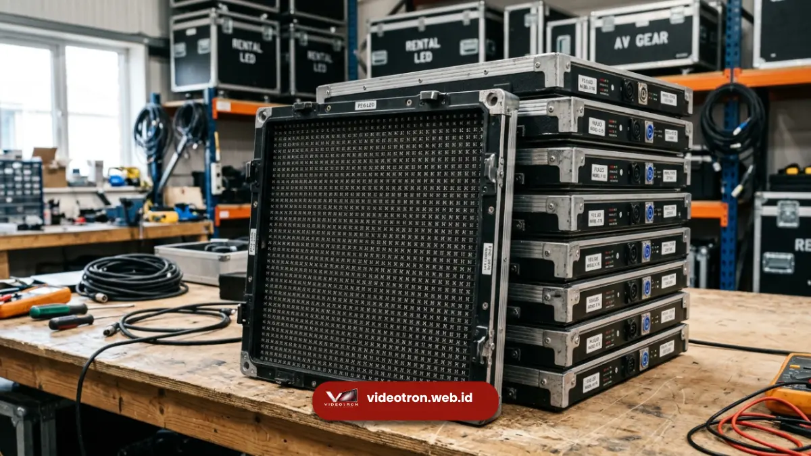

Sewa videotron Bali adalah layanan penyewaan layar LED besar yang mencakup unit layar, instalasi, operasional teknisi, hingga pembongkaran setelah acara selesai. Layanan ini banyak digunakan untuk konser musik, seminar korporat, gala dinner, dan pameran di berbagai venue di Bali. Sewa videotron memungkinkan penyelenggara acara menghadirkan tampilan visual berskala besar tanpa perlu investasi pembelian perangkat secara permanen.
Poin Penting Layanan Sewa Videotron:
- Sewa videotron Bali mencakup unit layar, instalasi, operasional, dan pembongkaran.
- Cocok untuk konser, seminar, gala dinner, dan pameran korporat.
- Tersedia pilihan unit indoor dan outdoor sesuai lokasi acara.
- Proses sewa melibatkan survei lokasi sebelum penentuan spesifikasi.
- Layanan didukung tim teknis selama berlangsungnya acara.
- 1. Apa yang Termasuk dalam Layanan Sewa Videotron Bali?
- 2. Apa Saja Komponen yang Disewakan dalam Paket Videotron?
- 3. Acara Apa Saja yang Cocok Menggunakan Sewa Videotron?
- 4. Mengapa Konser dan Seminar Membutuhkan Videotron Berukuran Besar?
- 5. Bagaimana Tahapan Proses Sewa Videotron di Bali?
- 6. Kapan Sebaiknya Melakukan Pemesanan Sewa Videotron?
- 7. Kesimpulan
Apa yang Termasuk dalam Layanan Sewa Videotron Bali?
Layanan sewa videotron Bali umumnya mencakup unit layar LED lengkap dengan struktur penyangga, kabel dan sistem pengendali, proses instalasi oleh teknisi, pengoperasian layar selama acara berlangsung, serta pembongkaran unit setelah acara selesai.
Beberapa penyedia juga menyertakan pendampingan teknis selama gladi bersih sebelum hari pelaksanaan untuk memastikan konten visual berjalan selaras dengan rundown acara.
Apa Saja Komponen yang Disewakan dalam Paket Videotron?
Komponen yang umumnya termasuk dalam paket sewa videotron adalah panel LED modular, rangka penyangga atau truss, kabel data dan power, unit pengendali konten (media server), serta genset atau sumber daya listrik cadangan apabila lokasi acara berada di area outdoor tanpa akses listrik memadai.
Acara Apa Saja yang Cocok Menggunakan Sewa Videotron?
Sewa videotron Bali cocok digunakan pada berbagai jenis acara berskala menengah hingga besar, termasuk konser musik, seminar dan konferensi korporat, gala dinner, product launching, pameran atau exhibition, hingga perayaan keagamaan dan budaya berskala besar.
Untuk panduan terlengkap mengenai implementasi pada event korporat, Anda juga bisa membaca ulasan pilar tentang Videotron Bali.

Penggunaan layar videotron indoor untuk gala dinner dan acara korporat mewah di Bali.Mengapa Konser dan Seminar Membutuhkan Videotron Berukuran Besar?
Konser dan seminar dengan jumlah audiens besar membutuhkan videotron berukuran besar agar seluruh penonton, termasuk yang berada di posisi jauh dari panggung, tetap dapat melihat detail visual dengan jelas.
Bagaimana Tahapan Proses Sewa Videotron di Bali?
Tahapan sewa videotron Bali umumnya dimulai dari konsultasi kebutuhan acara, survei lokasi untuk menentukan ukuran dan spesifikasi layar yang sesuai, penjadwalan instalasi sebelum hari acara, pengoperasian layar oleh teknisi selama acara berlangsung, dan diakhiri dengan proses pembongkaran unit.
Kapan Sebaiknya Melakukan Pemesanan Sewa Videotron?
Pemesanan sewa videotron sebaiknya dilakukan jauh sebelum tanggal acara agar ketersediaan unit dan jadwal survei lokasi dapat dipastikan, terutama pada musim ramai acara MICE dan liburan di Bali yang biasanya memiliki tingkat permintaan lebih tinggi.
Untuk rincian estimasi biaya berdasarkan durasi dan ukuran, Anda dapat meninjau panduan harga sewa videotron Bali.
Kesimpulan
Sewa videotron Bali memberikan solusi visual fleksibel untuk berbagai jenis acara tanpa perlu investasi perangkat permanen.
Dengan proses yang mencakup survei lokasi, instalasi, hingga operasional selama acara, penyelenggara dapat fokus pada jalannya acara tanpa khawatir kendala teknis layar.
Untuk mendapatkan penawaran sewa videotron Bali sesuai kebutuhan acara Anda, segera hubungi tim videotron.web.id dan konsultasikan detail acara Anda bersama kami.

Hawa Nadira
LED Technology Consultant dan Visual Educator
Konsultan dan spesialis solusi display digital berdedikasi tinggi yang fokus membagikan panduan edukatif mengenai penerapan teknologi layar LED videotron untuk kebutuhan interior modern di Indonesia.